Κάθε Java Enterprise εφαρμογή, χρειάζεται έναν application
server για να μπορεί εξ αρχής να δημιουργηθεί
χρησιμοποιώντας μοντέρνες τεχνολογίες και φυσικά
όταν ολοκληρωθεί να προσφέρει Ίντερνετ υπηρεσίες.
Ένας application server που είναι συμβατός με τα Java
EE standards, περιέχει ενσωματωμένα όλα εκείνα τα στοιχεία
και τεχνολογίες που χρειάζεται η εφαρμογή για να προσφέρει
μοντέρνες λύσεις όπως messaging, εύκολη επικοινωνία με βάση
δεδομένων μέσω του JPA, injection για καλύτερη διαχείριση των
αντικειμένων κτλ.
Γενικότερα υπάρχουν πολλοί open source και
δωρεάν application servers που χρησιμοποιούνται
σε μικρές και μικρο-μεσαίες κυρίως επιχειρήσεις.
Στα δωρεάν μαθήματα Java EE θα χρησιμοποιήσουμε
τον Payara Server. (https://www.payara.fish/software/downloads/all-downloads/)
Ο συγκεκριμένος application server είναι η συνέχεια του GlassFish που
τόσα χρόνια υποστηριζόταν επίσημα από την Oracle. Το project όμως δεν
συνεχίστηκε και ο GlassFish πέρασε στα χέρια του open source community.
Επειδή όμως οι εταιρείες ζητάνε να υπάρχει κάποιο επίσημο support
πίσω από το ποιόν, για αυτόν ακριβώς το λόγο δημιουργήθηκε ο
Payara Server ο οποίος είναι δωρεάν για προσωπική και
επαγγελματική χρήση και είναι 100% συμβατός με τα Java EE 8
standards. Επίσης προσφέρει και το Payara Micro Server
για microservices και εύκολο deployment σε container
περιβάλλον όπως Docker και Kubernetes.
Προσωπικά χρησιμοποιώ τον GlassFish και
κατά συνέπεια τον Payara Server πάνω από 10 χρόνια
και μπορώ να πω ότι προσφέρει ένα πολύ σταθερό περιβάλλον
ανάπτυξης enterprise εφαρμογών. Επίσης για την δημιουργία
των παραδειγμάτων θα χρησιμοποιήσουμε NetBeans 11.1
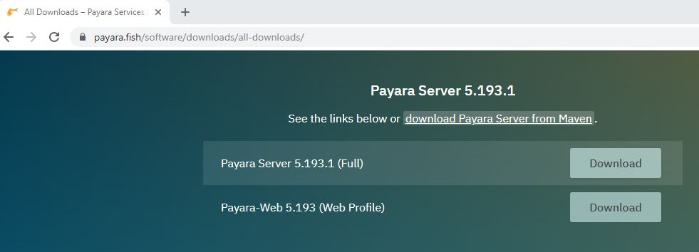
Μπορείτε να κατεβάσετε την έκδοση 5.193.1 ή
οποιαδήποτε έκδοση είναι η πιο τελευταία. Όταν το
κατεβάσετε μην το κάνετε unzip ακόμα γιατί πρέπει
να έχουμε πρώτα ολοκληρώσει κάποια άλλα βήματα.
Όλοι οι application servers που υποστηρίζουν την τεχνολογία
Java EE 8 χρειάζονται την Java 8 για να τρέξουν. Αν έχετε
ήδη Java 8 εγκαταστημένη στον υπολογιστή σας τότε δεν χρειάζεται
να προχωρήσετε στην εγκατάσταση της. Αν όμως ακολουθείτε τα
μαθήματα από την ενότητα Java SE
(https://kassapoglou.github.io/java/java-programming.html)
τότε θα έχετε μάλλον εγκαταστήσει την Java 13 μαζί με το NetBeans.
Αυτό που χρειάζεται τώρα είναι να προσθέσουμε επιπλέον και την Java 8.
Σαν πρώτο βήμα πηγαίνουμε στην Oracle και κατεβάζουμε την Java
8 έκδοση 8u221
(https://www.oracle.com/java/technologies/jdk8-downloads.html) .
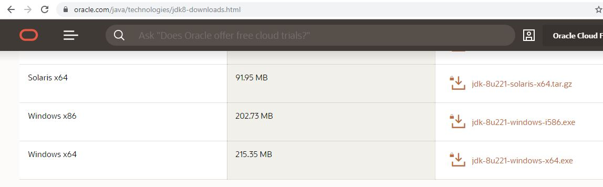
Αφού κατεβάσετε την συγκεκριμένη έκδοση, προχωρήστε
στην εγκατάσταση. Δεν χρειάζεται δηλώσετε αυτή
την έκδοση στα System Variables των Windows αν
ήδη έχετε εγκαταστήσει κάποια άλλη έκδοση. Αν
όμως είναι η πρώτη φορά, τότε πρέπει να ακολουθήσετε
τα βήματα από την Ενότητα 1 της Java SE
(https://kassapoglou.github.io/java/java-unit1-installation.html) .
Αφού ολοκληρωθεί λοιπόν η εγκατάσταση, λογικά
θα πρέπει να είσαστε σε θέση να βλέπετε στο
Program Files όλες τις εκδόσεις Java που είναι
εγκαταστημένες στο σύστημα σας. Στο δικό μου σύστημα
είναι δηλωμένη μόνο η Java 13 στα System Variables των Windows.
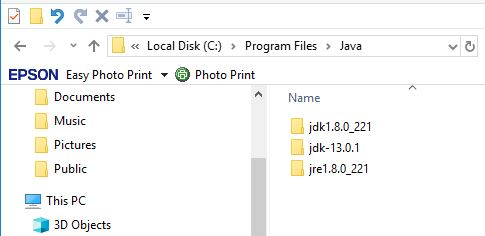
Αφού λοιπόν τώρα έχουμε σιγουρευτεί ότι υπάρχει Java
8 εγκαταστημένη στον υπολογιστή μας, μπορούμε να προχωρήσουμε
στην unzip διαδικασία του Payara Server.
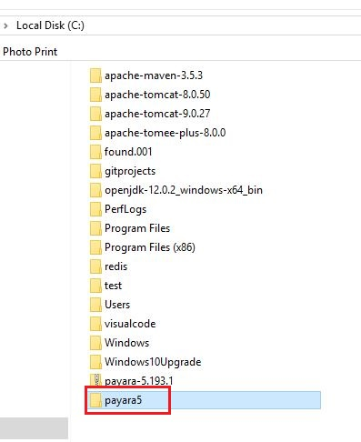
Ξεκινάμε το NetBeans, και αφού πατήσουμε Tools από το κύριο μενού, επιλέγουμε Java Platforms.
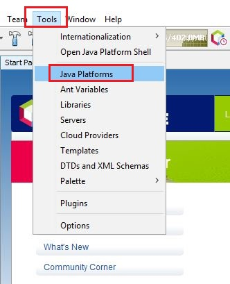
Στο εμφανιζόμενο παράθυρο πατάμε Add Platform.
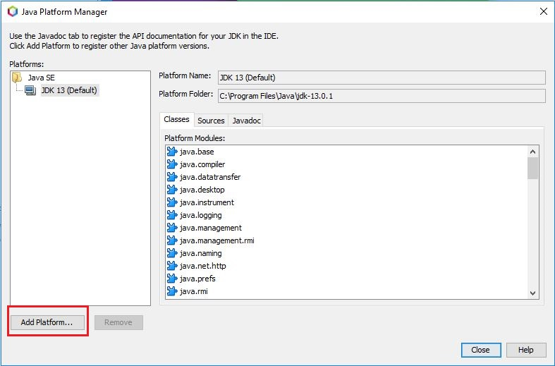
Επιλέγουμε Java Standard Edition και πατάμε Next.
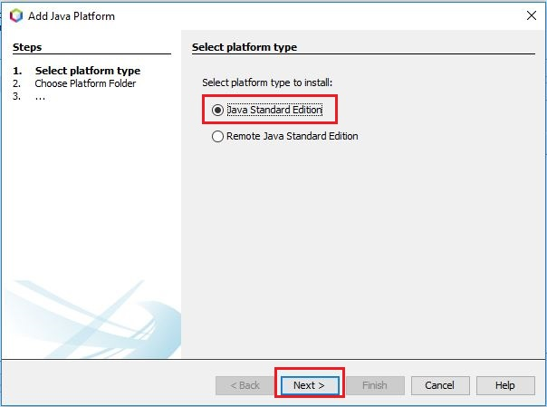
Πηγαίνουμε στο C:\Program Files\Java και επιλέγουμε jdk1.8.0_221.
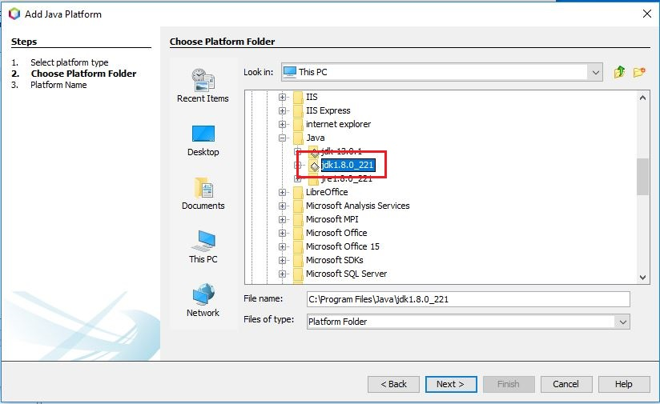
Αφού επιλέξουμε το jdk, η πλατφόρμα, η έκδοση και η τοποθεσία του
documentation της συγκεκριμένης έκδοσης Java θα βρεθούν αυτόματα από
το NetBeans. Πατήστε Finish να ολοκληρώσετε την διαδικασία.

Τώρα θα φανούν και οι δύο εκδόσεις Java στις διαθέσιμες πλατφόρμες.
Με τον ίδιο τρόπο μπορείτε να προσθέσετε περισσότερες εκδόσεις
Java στο NetBeans αν θέλετε να δοκιμάσετε ή να
γράψετε τον κώδικα σας κάτω από κάποια συγκεκριμένη έκδοση
Java. Πατήστε Close.
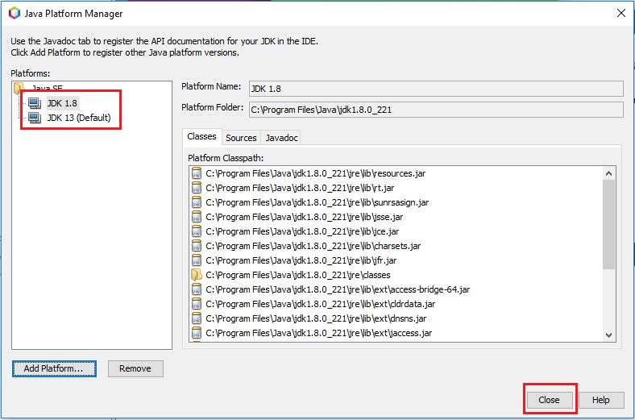
Είμαστε έτοιμοι τώρα να προσθέσουμε τον Payara Server στο NetBeans.
Υπενθυμίζω ότι θα πρέπει να το έχετε κάνει
unzip. Αν όχι, ολοκληρώστε το unzip του payara
αρχείου πριν ολοκληρώσετε αυτό το βήμα.
Αν δεν εμφανίζεται το tab Services,
πατήστε Ctrl + 5. Κάνουμε δεξί κλικ επάνω στο
εικονίδιο Servers και επιλέγουμε Add Server…
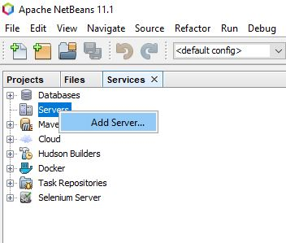
Επιλέγουμε Payara Server από το εμφανιζόμενο παράθυρο και πατάμε Next.
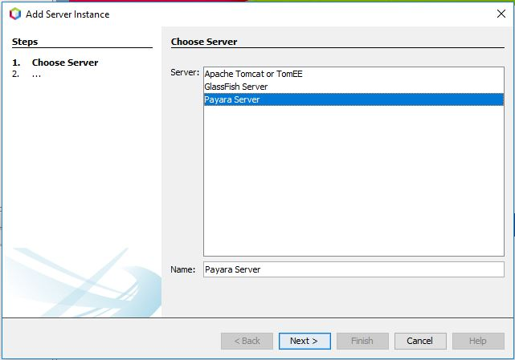
Στο παράθυρο Finding Feature, πατάμε το κουμπί Download
and Activate. Αυτή η διαδικασία χρειάζεται για να
ενεργοποιηθεί στο NetBeans το Java EE module. Δεν θα
κατεβάσουμε όμως τον Payara ξανά αφού το έχουμε ήδη
εγκαταστήσει στον υπολογιστή μας.
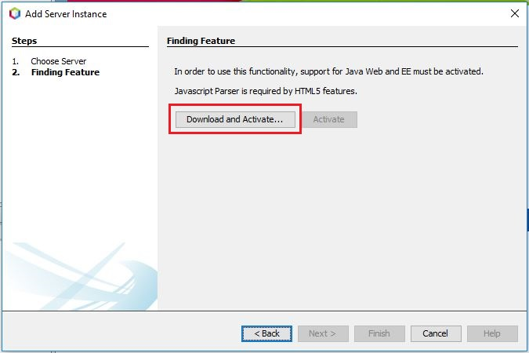
Αν βγει οποιοδήποτε άλλο παράθυρο και σας ζητήσει
να εγκαταστήσει κάποιο πρόγραμμα, δεχτείτε το.
Αφού ολοκληρωθεί η ενεργοποίηση του Java EE module,
θα πρέπει τώρα να δηλώσετε τον Payara Server στο
NetBeans χρησιμοποιώντας το Browse κουμπί. Όταν
τελειώσετε πατήστε Next. Μην σας ενοχλεί η επιλογή
Payara Server 5.192 γιατί εμείς έχουμε κατεβάσει την
πιο τελευταία έκδοση.
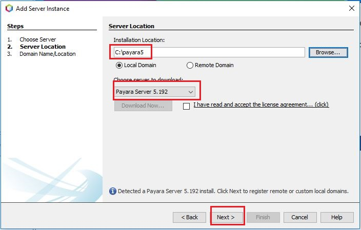
Το επόμενο παράθυρο μας
προτείνει μια τελευταία ρύθμιση
που χρειάζεται να γίνει στον Server για να είναι
έτοιμος να δεχτεί εφαρμογές. Απλά πατήστε Finish και
είμαστε έτοιμοι.
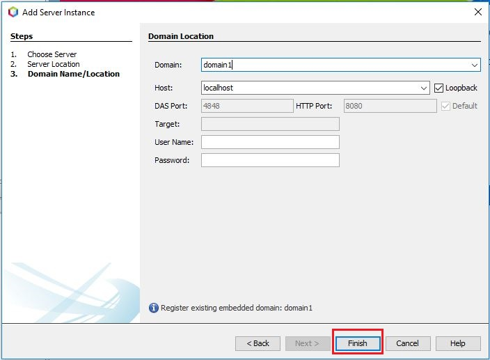
Αν πάμε πίσω στο tab Services, θα δούμε κάτω από την
επιλογή Servers υπάρχει ο Payara Server. Κάνετε
δεξί κλικ επάνω στον Server, και επιλέξτε Start
για να ξεκινήσει.
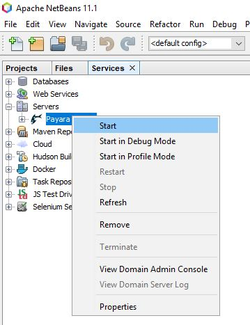
Σε αυτό το βήμα θα μας ζητήσει να επιλέξουμε
μια πλατφόρμα συμβατή με τον Server. Βασικά,
ψάχνει να βρει για οποιαδήποτε εγκατάσταση της
Java 8. Βεβαιωθείτε ότι η επιλογή στην Java Platform
είναι JDK 1.8 και πατήστε ΟΚ.
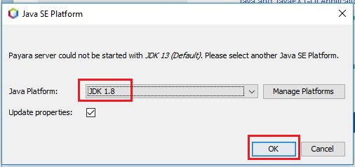
Το προηγούμενο παράθυρο δεν θα ξαναεμφανιστεί από εδώ
και πέρα. Επίσης εκτός από το να ξεκινήσετε τον Server
δεν θα χρειαστεί να κάνετε κανένα άλλο βήμα. Ο Payara
Server είναι επίσημα δηλωμένος μέσα στο NetBeans. Καθώς
ξεκινάει ο Server θα βλέπετε κάποια μηνύματα στην κονσόλα.
Αν δεν είναι ανοιχτή η κονσόλα πατήστε (Ctrl + 4).
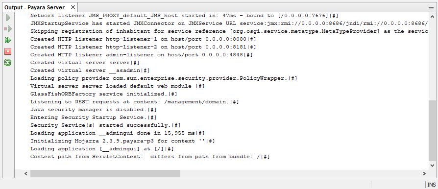
Όταν δίπλα στον Payara Server εμφανιστεί ένα πράσινο
βέλος, αυτό σημαίνει ότι έχει πλήρως ξεκινήσει και μπορούμε
να ανοίξουμε και την κονσόλα διαχείρισης του. Κάνετε δεξί
κλικ επάνω στον Server και επιλέξτε View Domain Admin Console.
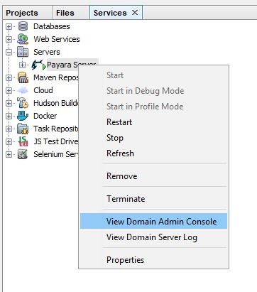
Σε λίγα δευτερόλεπτα θα πρέπει να εμφανιστεί η πιο κάτω κονσόλα στον Browser.
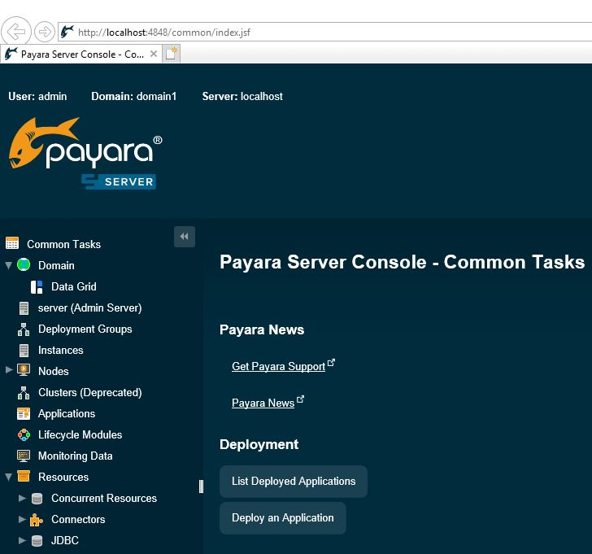
Αυτή την κονσόλα θα την επισκεφτούμε αρκετές φορές
κατά την διάρκεια των μαθημάτων μας. Για τώρα απλά
εξοικειωθείτε με τις επιλογές της.
Για να σταματήσουμε σωστά τον Server, κάνουμε δεξί κλικ επάνω στον Server και επιλέγουμε Stop.
Είμαστε έτοιμοι λοιπόν να αρχίζουμε να δημιουργούμε τις πρώτες μας Java EE εφαρμογές από την επόμενη ενότητα.